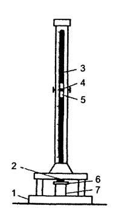
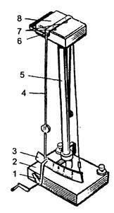
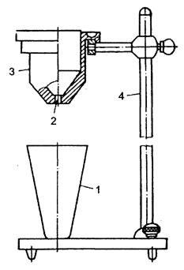

Тема 18
Лакокрасочные материалы
Показатели качества ЛКМ
На автомобильном транспорте первостепенное
значение имеет защита от коррозии кузовов легковых автомобилей и автобусов,
кабин и оперения грузовых автомобилей. Эти дорогостоящие и ответственные элементы
конструкции отказывают в работе, как правило, вследствие коррозии металла. Если
учесть, что стоимость, например, кузова легкового автомобиля составляет 2/3
стоимости всего автомобиля, то отказ в работе кузова практически равнозначен
отказу в работе всего автомобиля.
Основные показатели качества ЛКМ и их покрытий
Прочность при ударе (в Дж) определяется высотой падения груза массой в 1
кг, при которой боек прибора (рис. 1) не вызывает механического разрушения
покрытия.
Прочность при изгибе характеризуется минимальным диаметром стержня (20,
15, 10, 3 и 1 мм), изгибание на котором окрашенной пластинки из черной жести не
вызывает механического разрушения покрытия.
Прочность при растяжении измеряется в мм глубины прогиба металлической
пластинки в момент разрушения нанесенной на нее пленки покрытия.
Адгезия — прочность прилипания пленки к поверхности, определяется в
баллах по отслаиванию и шелушению лакокрасочной пленки после ее надреза лезвием
безопасной бритвы в виде решетки надрезов на расстоянии 2 мм друг от друга.
Твердость измеряется числом, полученным от деления времени качания
маятника маятникового прибора с шариковыми опорами, установленными на
стеклянной пластинке с нанесенным испытываемым ЛКМ, на время его качания, когда
шариковые опоры установлены на стекле (рис. 2). Чем тверже ЛКМ, тем число
больше.
Укрывистость измеряется количеством ЛКМ (в г/м2), необходимым
для закрашивания пластинки из бесцветного стекла таким числом слоев, при
котором не просматриваются черные и белые квадраты у подложенной под пластинку
шахматной доски.

Рис.1. Прибор У-1 для определения прочности ЛКМ:
1 —
станина; 2 — боек; 3 — направляющая труба со шкалой; 4 — пусковая кнопка; 5 —
груз; 6 — испытуемая пластинка; 7 — наковальня
От укрывистости зависят расход ЛКМ и число слоев краски.

Рис. 2. Прибор М-3 для определения твердости ЛКМ:
1 — пусковое приспособление; 2 — основание; 3 — шкала маятника; 4 —
маятник; 5 — штатив; 6 — плита; 7 — стальные шарики; 8 — испытуемая пластинка
Вязкость измеряется необходимым временем для вытекания 100 мл J1KM из
вискозиметра ВЗ-4 (рис.3) через отверстие диаметром 4 мм при температуре 18—20
°С, нормальное значение которого должно быть от 15 до 45 с. При повышенной
вязкости увеличивается толщина пленки одного слоя и снижается ее прочность, при
пониженной — толщина слоя уменьшается и увеличивается расход растворителя.

Рис. 3. Вискозиметр B3-4:
1 — стакан; 2 — сопло; 3 — емкость вместимостью 100 мл; 4 — штатив
Стойкость к перепадам температур определяется числом циклов
попеременного нагрева до 60 °С с выдержкой 30 мин и охлаждения до —40 °С в
течение часа окрашенной стальной пластины, при котором не наблюдается появление
трещин лакокрасочного покрытия (ЛКП).
Водостойкость и стойкость к минеральным маслам и бензину определяется
погружением окрашенных металлических пластин в соответствующую жидкость при
температуре 20±2 °С, время определяется ГОСТом. После испытания ЛКП должно быть
без изменений.
Потеря блеска при влажном облучении определяется облучением кварцевой
лампой в течение определенного времени пластинки с ЛКП, которая погружена в
дистиллированную, подогретую до 50 °С воду.
Время высыхания характеризует продолжительность высыхания ЛКП до
заданной степени при определенной температуре. Установлено семь степеней
высыхания. Чем выше степень высыхания, тем качественней произведена сушка.
Маркировка ЛКМ
Маркировка ЛКМ имеет пять групп буквенно-цифровых знаков.
Первая группа — наименование ЛКМ («эмаль», «грунтовка», «шпатлевка»).
Вторая группа — обозначается двумя буквами и указывает тип
пленкообразователя по химическому составу:
НЦ — нитроцеллюлозный, MJI — меламинный, ПФ — пентафталевый, БТ —
битумный, ФЛ — фенольный, АК — полиакриловый, ВЛ — поливинилацетатный, ГФ —
глифталевый, ЭП — эпоксидный, ПЭ — полиэфирный, КО — кремнийорганический и т.
д.
Для специфических ЛКМ между первой и второй группами знаков через дефис
ставят индексы: В — водоразбавляемые, П — порошковые, Э — эмульсионные, Б — без
активного растворителя.
Третья группа — отделяется от второй дефисом и определяет основное
назначение ЛКМ, обозначается цифрами от 1 до 9 — в обозначении эмалей, 0 — в
обозначении грунтовок и 00 — в обозначении шпатлевок.
Цифры означают:
1 — эмаль атмосферостойкая,
2 — ограниченно атмосферостойкая,
3 — консервационная,
4 — водостойкая,
5 — специальная,
6 — маслобензостойкая,
7 — химически стойкая,
8 — термостойкая,
9 — электроизоляционная.
Четвертая группа — определяет порядковый номер, присвоенный данному ЛКМ
и обозначается одной, двумя или тремя цифрами, номер характеризует оттенок
цвета эмали.
Иногда добавляют буквенные индексы для обозначения специфической
особенности ЛКМ. Например, индекс ГС обозначает, что эмаль горячей сушки, ХС —
холодной сушки, ПГ — пониженной горючести.
Пятая группа — обозначает цвет и пишется полным словом.
Пример. Эмаль В-ПЭ-1179 красная:
— Эмаль — вид ЛКМ,
— ПЭ — полиэфирная ненасыщенная,
— 1 — атмосферостойкая,
— 179 — порядковый номер,
— красная — цвет.
Качество ЛКМ улучшится и увеличится долговечность, если перед грунтовкой
поверхность обработать растворами солей фосфорной кислоты, так как в результате
фосфатирования на поверхности металла образуется фосфатная пленка серого цвета
толщиной 2—5 мкм, которая защищает металл от коррозии и улучшает сцепление ЛКМ
с металлами.
Вспомогательные ЛКМ
Перед нанесением ЛКМ проводят очистку поверхности от загрязнений и
старой эмали.
Загрязнения удаляются щелочными моющими препаратами, уайт-спиритом,
скипидаром, бензином, ацетоном и другими органическими растворителями. Ржавчина
небольшой толщины удаляется с помощью грунта-преобразователя или
соответствующих паст на основе ортофосфорной кислоты.
Удаление старой эмали облегчается обработкой ее специальными смывками.
При подкраске отдельных мест для плавного перехода от окрашиваемой
поверхности к неокрашиваемой этот участок обрабатывается водостойкой
шлифовальной шкуркой с водой, которая также используется для обработки слоя
шпатлевки, если та применялась.
Защитные материалы
Наружные поверхности автомобиля защищают от коррозии пластичными
консервационными смазками, консервационными маслами, мастиками и
пленкообразующими ингибированными составами.
Наружное покрытие легковых автомобилей периодически обрабатывают
полиролями, которые не только улучшают внешний вид, но и увеличивают срок
службы ЛКП. Их основной недостаток состоит в том, что они смываются после
нескольких моек автомобиля.
Пластичные консервационные смазки и масла применяются для защиты деталей
и автомобилей при хранении от 1 до 8 лет, иногда до 15 лет.
Для защиты днища кузова легкового автомобиля с внешней стороны, а также
для защиты крыльев применяются противошумные и антикоррозионные мастики,
представляющие собой смесь нефтяного битума с асбестом, минеральным маслом и
различными наполнителями. В их состав также входят ингибиторы коррозии и
поверхностно активные вещества. Эти составы легко проникают в дефекты сварочных
швов, трещин, в рыхлую ржавчину.
Наряду с отечественными антикорами для защиты днищ широкое
распространение получили голландские антикоры: Тектил 232, Тектил-бронза 230
фирмы «Вальволин», а также швейцарский Хардвакс фирмы «Ваксойл».
Антикоррозионные средства наносятся через специальные распылители,
предварительно разбавленные (бензином, керосином) или подогретые до разжижения.
В отдельных случаях их наносят кистью.
Для защиты внутренних поверхностей автомобиля (скрытых полостей)
применяются антикоррозионные препараты Мовиль, Финикор, Тектил 320ЦР, Тектил
668ЦР и др.
Принципиальное отличие антикоров для днищ от антикоров для скрытых
полостей заключается в том, что первые не должны стекать при комнатной
температуре, а вторые наоборот — должны затечь во все впадины и щели, пока не
испарится растворитель. И те, и другие должны обладать теплостойкостью и
морозостойкостью, не взаимодействовать с ЛКП.
Контрольные вопросы
1. Какие виды ЛКМ используются на автотранспорте?
2. Назовите способы нанесения ЛКМ.
3. Расскажите о классификации ЛКП.
4. Перечислите показатели качества ЛКМ и ЛКП.
5. Как маркируются ЛКМ?
6. Назовите известные Вам вспомогательные ЛКМ.
7. Назовите известные Вам защитные материалы.